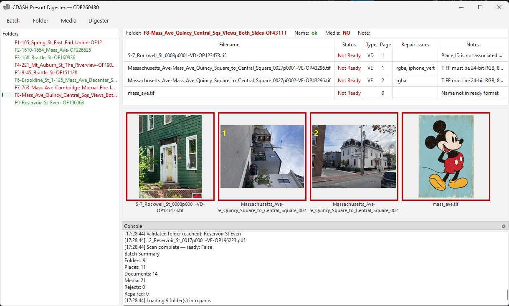
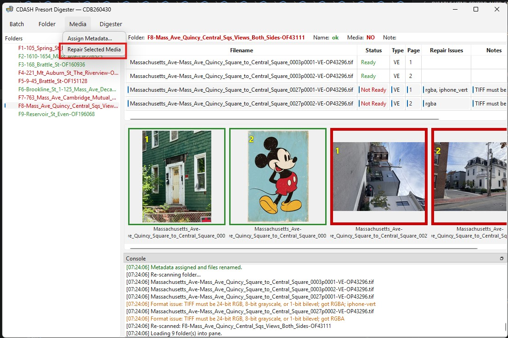
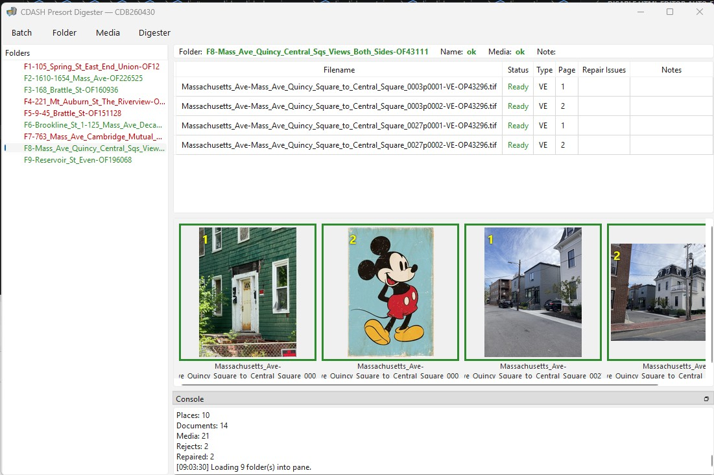

CDASH Pre-Sort Digester
The CDASH Digester assists with preparing collections of digital documents for accession into the CDASH repository.
The Digester is an open source python program that can be used on any platform. Our version has a windows executeable produced with pyinstaller (link below). The source code and a more technical user document can be explored and forked on the github repository.
Topic Index
Downloads
Right-Click these links and paste into your browser URL Bar.
Preparing Media Files for Accession
In the earliest phase of the accession process, the archivist has media files representing documents that may have been born digital or digitized. The archivist uses the windows file manager and the CDASH Digester to organize the files into a structured Archival Information Package (aka: CDASH Batch). A CDASH Batch is a collection of media files along with catalog information. The batch is used to by the Omeka CSV Import Tool (CDASH Mod) which creates the necessary omeka resources with all of the necessary relationships. Once uploaded. the CDASH Batch is preserved in cold storage as the preservation master for the new documents.
Tokenized Folder and File Names
A CDASH Batch is a folder that contains systematically named media folders and media files. The naming convention provides an identification scheme that makes the coherence between the files and the batch catalog information and links media files as new documents with relations with Places and Folders in the on-line CDASH repository.For example, the first step in creating a new CDASH Batch is to create a new folder whose name includes two tokens, separated by a "-".
CDB[YYMMDD](a-z)-[Mnemonic Name]e.g. CDB260624-EastCambridge_Box40 .
Like always, no spaces are allowed in file names. Only alphanumeric characters. "-" is reserved as a delimiter between tokens and "_" is allowed to represent spaces in a tokenized word.
When this documentation refers to a token as Mnemonic it means that it is a string that is intended to remind the archivist of the subject of the resource and potentially the page order of sequential media files. Once the omeka resource ID has been validated, the digester replaces the mnemonic with a space-removed version of the linked folder or place. This mneomic portion of the file name helps to keep the batch easily searchable by un assisted humans.
The scheme of tokenized names will be expanded below. The naming convention provides unique identifiers for documents and media and the file system address of the preservation master. These IDs are assigned as identifier properties of corresponding Omeka resources and easily traced to the original batch, which is very handy means of retrieving and troubleshooting.
Initializing a Batch
The first stage of the accession process is carried out with Windows Explorer.
- Start an empty batch folder named in the form CDB[YYMMDD]-[Mneomic Subject].
- Within the batch folder create a sub-folder named media
- Create or collect a digitized document or sequence of images representing the pages or sides of a document.
- Check CDASH to see if the document is associated with an existing cdash place and cdash folder.*
- While you are looking at these resources in Omeka, harvest the Omeka resource IDs for the Place (omeka item), and Folder (omeka item-set) as the integer number that appears at the end of the URL for the resource.
Initially, a batch media folder has a name as follows:
[Mnemonic Name]-OF[item-set-id]
e.g. 128-136_Main_St-OF23789
- Initially, individual media files in a folder can have any names at all, so long as media files representing sequential pages sort in page-order.
- Optionally, while you have the item-id of the CDASH Place Item associated with your new document, you are welcome to append this ineger (no leading zeros) to the name of the first media file in your document sequence (sorted alphabetically). Media files with a place id are formatted like this:
[Mnemomic Name]-OP[omeka_item-id]
e.g. 125_Main_St-OP456345
- * Every CDASH document must be related to one and only one CDASH Place and One CDASH Folder. If the new media files are related to places or folders that do not already exist, these resources must be created before the digester will permit the media files to be ready for importing.
Introducing the Batch Digester
Up until this point in the workflow, the archivist has been using the windows file manager to build a batch of media files that is minimally compatible with the CDASH Batch Digester. The digester can be pointed at a such a batch and it will examine the file and folder names and validate their references to existing on-line resources. Formats and internal metadata tags of media files are screened to assure that they conform with archival requirements.
Upon initialization the digester creates a Batch Database (catalog\batchdb.sqlite) and builds a catalog of the folders and media files, documents, places. The database also holds cached information from the various validation and screening stages so that these do nto have to be repeated unless the modification time of the file changes.
The archivist can continue to add files and folders and use the windows file manager to change names, if needed, and the digester can re-scan the batch folder and update its graphical use interface to assist with the particulars of the file names and the which files and folders are ready and which ones still need attention. The user can force a re-scan of a folder or of the whole batch using the Rescan options under the Batch or Folder menus.

The first thing to do with the Digester is to scan a batch (Batch menu > Scan Batch).
If that batch has not been scanned before the digester will create a catlog folder at the top level of the batch. In this folder a batch database is created and a couple of log files.
Then the digester looks at every media folder.
- A folder index token is appended to the front of the folder name.
- The Omeka Folder ID is checked.
- The Mnemonic portion of the folder name is replaced with a sluggified version of the name of the CDASH Folder.
- Within each folder, each media file is screened for format
- the Place Item references are checked against the on-line CDASH repository
- Each media file is assigned to a document ID
As the digester is doing all of these things, it is streaming messages to the console window. It is useful to look at this log to see if anything weird happened. The contents of the console log are also saved in the batch catalog folder.
Ready Vs. Not Ready
The gist of the digester workflow is to engage the archivist in a dialog to move all of the media files from a Not Ready (red) to a Ready (green) status. In the folder pane on the left, you can see the ready status of folders. Click a red folder, and the digester renders a thumbnail of each media file and in the Thumbnail Pane. The border color of each thumbnails reflect the ready status. Above the thumbnail pane, the folder media table shows useful info about the status of the media files, with recommendations to the archivist.
The aim of the game is to move all of the media files to a Ready status.
Ready Names
The structuring form and the content of folder and file names is critical. We mentioned that in the initial human-managed state of a batch, there is a lot of leeway. Once the batch has been groomed the names will all conform to the folowing tokenization:
Batch Media Folders
F[Folder Index]-[CDASH Folder Name]-OF[Item-Set-ID]ex: F13-122-136_Main_St-OF234987
Batch Media Files
[CDASH Place Title]_[Doc_Index]p[Page Index]-[Doc Type Code]-OP[CDASH Place ID]ex: 122_Main_St-Oliver_Holmes_House-OP8473
More Hints in Media File Names
As we will see, the digester provides a simple interface for assigning metadata to individual or groups of selected media files. Nevertheless, the archivist or contributors may find it useful to build document and page indexes and or document type codes into file names up-stream of the digester. This is possible to do. One catch: don't re-use a document index within a folder except in the situation of multiple media documents being pages of a common document.
Assign or Adjust Document Metadata: Places, Types and Pages
As it scans the files in a folder, the Digester keeps track of the documents and pages that are implied by the Doc and Page indexes specified in file names. If these indexes are not already present in file names, then the files' statuses will be Not Ready. These issues can be fixed by selecting one or more documents in the table or on the thumbnail pane and operating on them with the Media > Assign Metadata dialog.
 
The Assign Metadata dialog, launched from the Media menu provides a means of grouping files into documents or for exploding formerly grouped pages into individual documents. The Assign Metadata dialog also manages the assignment of documents to CDASH Places and document types.
The ordering of pages in documents depends of the way that the files sort alphabetically. If this ordering gets messed up, it may be necessary to change names using the windows file explorer. Use Folder > Rescan after you have done this.
Format Repair
As the Digester scans the files in a folder, it checks each media file for conformance with CDASH Media Format Requirements. Ideally, contributors to the repository and the archivist will develop habits such that all submissions are properly formatted as 8 or 24 bit image files or PDFa compliant documents. Since the digester was originally designed to process large batches of haphazard files, we have built in some repair functions for common and easily repairable issues. Repair issues these are explained in the table pane for each media file in the current folder. Most issues can be repaired by selecting one or more files and choosing Media > Repair Media.
It is always best to take care of media format issues as far up-stream as you can. Best of all, to make sure that whartever process is producing the digital file is capturing in the best compatible format, bit-depth and compression and with the appropriate PDF/a compliance tags. There is no warranty with the Digester's Repair capabilities, so it is always to e archivists responsibility to assign the appropriate level of confidence when doing bulk uploads.
The Rejects Folder and Log
The Digester's repair function begins by creating a copy of the original media file into a rejects sub-folder. The repaired version is written back to the top level of the media folder. This strategy is useful in cases where one has questions about whether a repair may have had undesired effects.
The repair process saves a rejects.csv in the batch\catalog folder which can be useful for detecting systematic or random quality control issues that may not be detected during the piecemeal poking at files.
Unrepairable Files
Some format issues can't be fixed by the digester. For the common ones that came up during testing, the Media > Repair function will copy these files to the rejects folder and take them out of the top level of the batch media folder. Of course, the archivist is responsible for deciding how to repair these or whatever and replace them, or defer the issue to a later batch. If this sort of hard rejection results in an empty batch media folder, use the windows file explorer to remove it and re-scan the batch.
Batch Ready and Generating CSV Files
When all of the media files folders are have a Ready status, you will find the Generate CSV Files function is now clickable. Choosing this function triggers a consolidation of all of the Digester's catalog information into a set of CSV Import files that are ready to run through the Omeka CSV Import Tool (CDASH Mod) to create the Omeka resources necessary to materialize the new documents and media reflected in the batch.